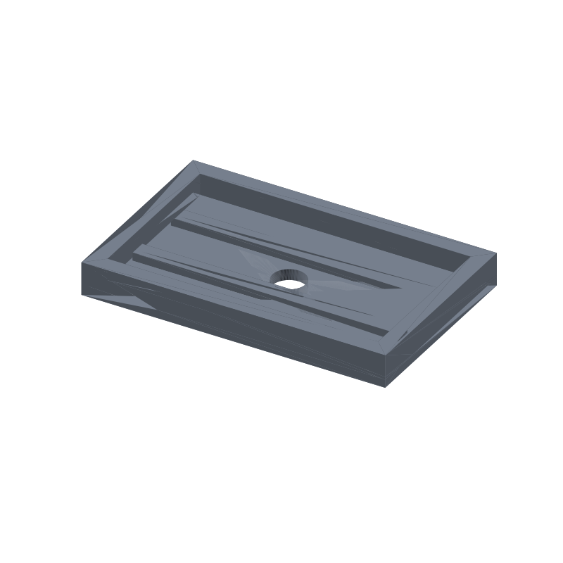

Soap dish STL, drain hole and two ribs, 110 × 70 × 12 mm
A bar of soap sitting in a flat dish ends up glued to a puddle of its own sludge. This dish skips the flat bottom: two ribs 6 mm wide run the length of the cavity and stand 3 mm proud of the floor, so the bar rests on dry ridges while water and soap sludge slide underneath. In the middle of the floor, a 12 mm hole drains straight through onto the shelf, so nothing pools in the dish between washes.
The tray is 110 × 70 × 12 mm with 6 mm walls and a 4 mm floor. The cavity is 98 × 58 mm and holds one standard bar up to about 95 × 55 mm; oversized artisan bars will overhang the walls, so measure your bar first. The whole thing prints flat in the modeled orientation: the only cut is one vertical cylinder through the floor, every layer prints a closed ring, no supports, no bridging.
This page carries the measured spec sheet: dimensions taken from the exported mesh, every edge counted, the hole ray scanned from both directions, the volume cross checked against an analytic sum, and preview renders, so you can check the numbers before you slice.

The STL is one material and prints in one color; the renders shade the faces by light angle so the ribs, the drain hole and the wall thickness read as geometry, not paint.
Spec sheet, measured from the mesh
| Spec | Value |
|---|---|
| As exported | One connected open tray 110 × 70 × 12 mm with two lengthwise ribs and one drain hole through the floor |
| Drain hole | One 12.0 mm design diameter through the 4 mm floor (ray scan at 0.25 mm step measured 11.5; the analytic layout puts it at exactly 12.0) |
| Hole placement | Top-face opening at x 49.2 to 60.8, center measured 55.0, exact against the design 55.0; a ray down the axis from above and up from below exits the mesh clean both ways |
| Ribs | Two, 6 mm wide, standing 3 mm proud of the floor (ray stack 0.0 to 7.0 on both, no ghost face at the floor line); centers at y 23.0 and 47.0, symmetric about the hole, 3 mm clearance rib to hole |
| Rib span | Measured x 7.25 to 102.75 against a design 7 to 103, the 0.25 mm step quantization; walls measured 0.5 to 5.8 and 104.2 to 109.2 on the same scan line |
| Solid probes | 12 of 12 land inside the solid: 2 rib crowns, 2 rib ends, 4 on the floor beside the hole, 4 wall ring corners (ray verified) |
| Volume | 49.93 cm³ mesh vs 49931.61 mm³ analytic, delta 0.000364%, ≈ 62 g PLA solid, less at typical infill |
| Flat in the modeled orientation, one vertical cylinder hole wall to wall, no supports, no bridges | |
| Mesh check | Watertight, winding consistent, euler 0, genus 1 (the one drain hole: 2 − 2×1 = 0), one body, 594 faces, 297 vertices, all 891 edges shared by exactly 2 faces (trimesh 5.1.0, 2026-09-10) |
| Files | STL (29 KB) and 3MF (7 KB) plus the parametric generator script gen_soapdish32.py |
| Params | width 110, depth 70, height 12, wall 6, floor_t 4, hole_d 12 (12 to 16), rib_n 2, rib_w 6, rib_proud 3; rib centers and clearances derive from the layout and the generator rechecks them before cutting |
| License | CC-BY 4.0 on MakerWorld; royalty free, no AI training, direct from us |
How the dish was verified
The generator extrudes the 110 × 70 mm floor, the wall ring and the two ribs as separate solids and unions them with the manifold engine; the ring and ribs sink 1 mm into the floor, so nothing shares a contact plane. The drain hole is cut with one cylinder of 128 segments whose caps sit 1 mm outside both floor faces, zero coplanar with the solid. The script asserts watertight, winding consistent, one body, and an euler number of exactly 0 before it writes anything: 0 is 2 minus twice the genus, and the genus 1 comes from the single through-hole. It also checks cross sections: z 1.5 shows 2 loops (floor outline plus the hole), z 5 shows 4 loops (ring outer and inner plus the two ribs), z 8 and z 11 show 2 loops each.
The shipped STL loads back with merged vertices as watertight, winding consistent, euler 0, genus 1, one body, is_volume true. The edge census counts 891 edges and every one of them is shared by exactly 2 faces: zero non-manifold edges anywhere in the mesh.
The features were ray scanned on the reloaded mesh in 0.25 mm steps. A scan line down each rib center stacks hits at 0.0 and 7.0, floor plus the 3 mm proud crown, with no ghost face at the 4 mm floor line, so the union is clean. The rib span reads x 7.25 to 102.75 against the design 7 to 103. The drain hole opening on the top face reads 11.5 mm at the step quantization with its center at 55.0, exact against the design; the analytic layout puts the hole at exactly 12.0 mm. A ray down the hole axis from above and up from below passes clean through with zero intersections: the hole really does pierce the floor. Twelve solid probes, on the rib crowns and ends, on the floor beside the hole and in the wall ring corners, all land inside the solid.
The volume cross checks two ways. Trimesh measures 49.93 cm³ on the mesh. An independent sum from the layout, the 30,800 mm³ floor plus the 18,144 mm³ wall ring minus 2,016 mm³ of ring buried in the floor, plus 4,608 mm³ of rib minus 1,152 mm³ buried, minus the 452.39 mm³ hole, comes to 49,931.61 mm³ = 49.93 cm³. The two agree to 0.000364%, far inside the 1% gate.
Print notes
Print the file as exported, flat in the modeled orientation: the base is a solid 110 × 70 mm face on the plate, the ribs and walls rise from the floor, and the drain hole is a vertical cylinder coaxial with the build direction, so every layer prints a closed ring. Nothing bridges, nothing floats, no supports, no brim beyond plate adhesion. 0.2 mm layers and three perimeters are a reasonable default; the 6 mm walls and ribs leave room for the perimeter count without starving the infill.
I have not test-printed this yet. If you print it, tell me how the drain hole treats your sink shelf. The knobs are in the generator: width, depth, height, wall, floor_t, hole_d, rib_n, rib_w and rib_proud.
Change any of those and rerun gen_soapdish32.py: the rib centers and the hole recompute from the layout and the script refuses to write an STL if the wall drops under 4 mm, the floor under 3 mm, a rib under 2 mm proud, or the rib-to-hole clearance under 2 mm, or if the reload fails the one body, watertight, euler 0 checks. If soap crumbs slow the drain, a 14 mm hole is the largest that still clears the ribs; one number change, not a redesign.
Honest limits
The dish is mesh verified but untested on a printer, and the bar fit is the modeled 98 × 58 mm cavity, not a fit check against real soap. Standard bars sit with room to lift out; a wide artisan bar will overhang the 6 mm walls, so measure the bar across at its widest point first.
The hole width in the spec table reads 11.5 mm because the ray scan steps 0.25 mm; the analytic layout and the volume agreement put the hole at exactly 12.0 mm with the center at 0.0 mm error. The quantization is a measurement artifact, not a defect in the mesh.
PLA is fine on most sink shelves, but a wet bathroom wants something that shrugs off water and heat cycles: print the same generator output in PETG, or a colored matte filament that hides soap scum better than white.
Where to get the files
The soap dish is staged on our MakerWorld account and goes public on our profile once it is submitted and clears review.
More printed organizers and bench tools, with a status table for the pool: 3D printed desk organizers and printable tools. The rebuild-everything approach, generator parameters per model side by side: parametric 3D printed tools.
Compare all 20 models by solid mesh volume in the STL volume ledger.
FAQ
Will my soap bar fit?
The cavity is 98 × 58 mm, so standard bars up to about 95 × 55 mm sit with room to grab. Big artisan bars overhang the 6 mm walls; measure your bar first, and if it is wider, set width and depth in the generator and rerun. The bar rests on the two ribs, not the floor, so bars shorter than the cavity still drain fine.
Why a hole and ribs instead of a flat dish?
Drainage. The ribs lift the bar 3 mm off the floor, so the wet face dries in moving air instead of sitting in its own sludge, and the 12 mm hole carries the runoff straight through to the shelf, so nothing pools between washes. The through-hole is also the whole topology: the euler count of 0 encodes exactly the one hole, so there is nothing else hiding inside the mesh.
Does it print without supports?
Yes. Printed in the modeled orientation, every surface is either flat on the plate or a vertical wall, and the drain hole is a vertical cylinder: every layer prints a closed ring, wall to wall, with no bridge anywhere. The euler count of 0 is the drain hole and nothing else, so the slicer has no overhang to catch.